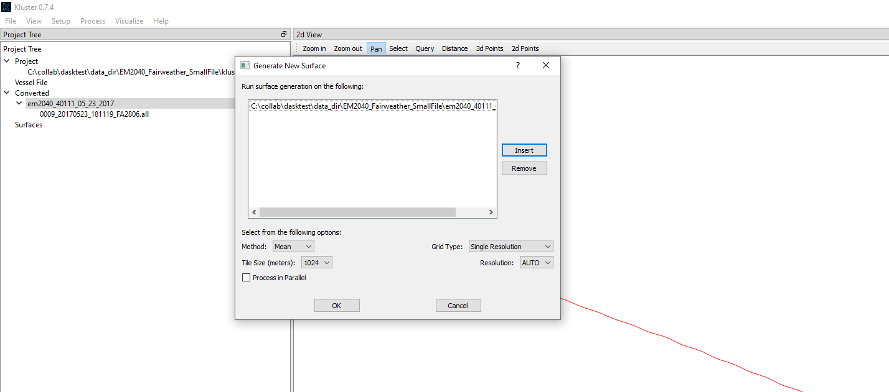
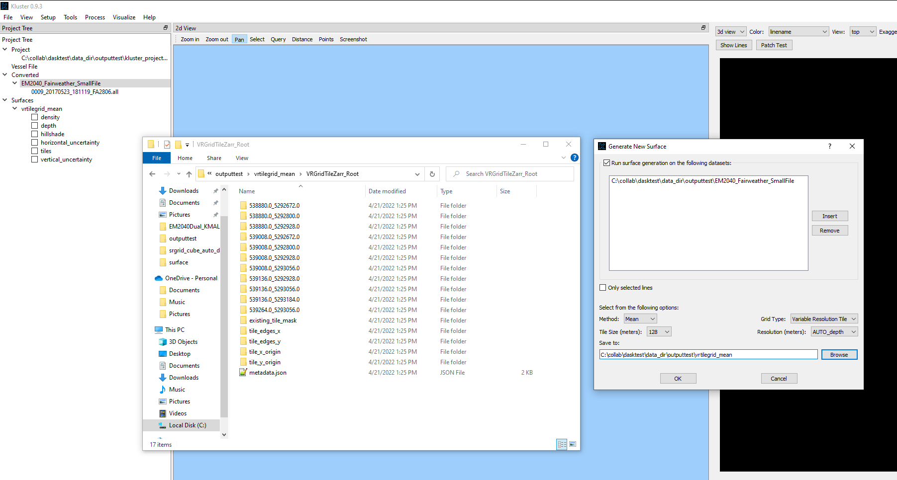
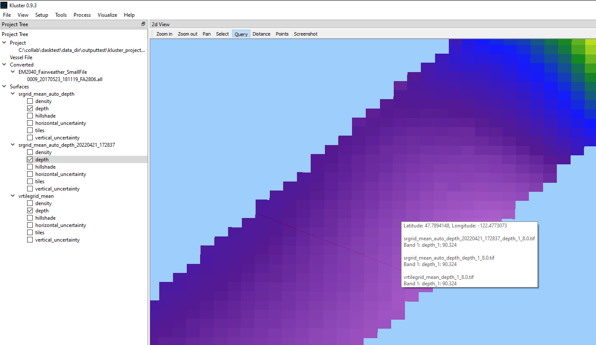
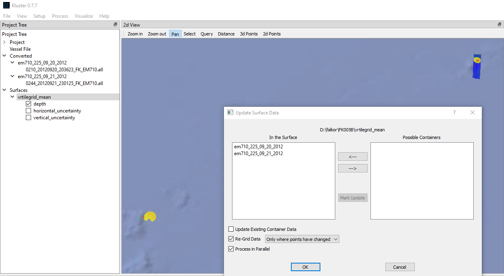

Surfacing¶
So far, we have discussed working with point clouds, or the soundings visualized in 3d space. But what about viewing the depth and uncertainty in 2d? As a picture? This is where the gridding tools come into play. Kluster uses the Bathygrid module which I designed specifically for gridding multibeam data in an efficient and flexible way.
Overview¶
Let’s look at how to use this module in Kluster. With a converted data instance selected, let’s go to Process - New Surface.
{kind=link}
This is going to create a surface with all the points from each converted instance we had highlighted here. The default is to create a single resolution surface where each grid node has a value equal to the mean depth/uncertainty value of all the soundings in that grid cell. The size of the grid cell (resolution) is set to AUTO, which will pick the resolution based on the depth of the soundings in that region (based on the NOAA Specifications and Deliverables):
0 to 20 meters = 0.5 meter resolution
20 to 40 meters = 1.0 meter resolution
40 to 80 meters = 4.0 meter resolution
80 to 160 meters = 8.0 meter resolution
160 to 320 meters = 16.0 meter resolution
320 to 640 meters = 32.0 meter resolution
640 to 1280 meters = 64.0 meter resolution
1280 to 2560 meters = 128.0 meter resolution
2560 to 5120 meters = 256.0 meter resolution
5120 to 10204 meters = 512.0 meter resolution
greater than 10204 meters = 1024.0 meter resolution
You’ll notice that our resolutions are all powers of two. This is intentional, as it allows us to build nice square tiles of the same size (1024 meters for example) that are completely and cleanly filled by grids of these resolutions.
The tile size is a parameter that you can change to affect the performance of the grid in both visualization and processing. Bathygrid will tile the area into tiles and then run the gridding algorithm on those tiles one after the other. If you Process in Parallel, it ill process those tiles in parallel, which will greatly increase the performance of the gridding process.
You want to adjust the tile size to have at least 100 tiles or so. I’ve found this to be a rough guideline that gets me pretty good performance. In this example here, using a Tile Sie of 1024 meters gives me 2 tiles (which I know because I just ran it to check). So I probably want to drive the tile size down, maybe to 256 meters just to improve the performance of the parallel gridding process. Let’s look at the results of 1024 meter tile size versus 256 meter tile size.

What I have done here is grid with the two different tile sizes, went into the output grid directories (which are srgrid_mean_auto and srgrid_mean_auto_20210813_104634 and are right next to our processed multibeam data by default) and looked at the number of folders. Each folder represents a tile (with the folder name being the origin point of the tile in eastings_northings). So we can see that a 1024 meter tile size created 2 tiles and a 256 meter tile size created 5 tiles. Better but not ideal. Of course in this instance, our surface generation only took about 1 second, so it’s not really worth trying to optimize. But when you set the tile size, try to get more than just a few tiles for your survey area. In the future, picking the tile size will be an automated process, so you won’t have to worry too much about this part. Let’s try a variable resolution grid now. Variable resolution is going to allow us to have tiles where each tile can have it’s own resolution. The only option currently is AUTO for resolution, and it uses the same lookup table as above to determine the resolution of the tile.
{kind=link}
Variable resolution is going to create tiles of “Tile Size” (1024 meters in this example) with sub tiles of “Subtile Size” (128 meters in this example). The result we can see in the Explorer window shown above. We have 7 subtiles (all 128 meters by 128 meters) in this 1024 meter by 1024 meter tile. Each subtile has a mean depth, and we look up that depth in the depth to resolution table above to get the resolution of the subtile. Again, each subtile has it’s own resolution. Since our depth in this example is basically flat across the line, we are probably going to see the same resolution in each of our Variable Resolution subtiles. So the single resolution and variable resolution grids are probably basically the same. OK, enough about folders and tiles. Let’s look at something already! Let’s expand the folders in the Surfaces dropdown in the Project Tree and try turning on one of the Depth layers.

Turning on a Depth layer (or any layer) should make the display zoom to the area and show you the grid. I just have a little multibeam file here, so the grid is fairly small. I have the Query tool turned on in 2dview which lets me view the Depth layer value where my cursor is. You can also left click to print the value in the Output window. We can also turn on multiple layers to get the values across all layers. Let’s do this now.
{kind=link}
We can see that our single resolution grids with the different tile sizes and the variable resolution grid all produce the same answer for the same location. That’s a relief! If they didn’t, we’d have a real problem on our hands. We can also see that the tile shown in all three is an 8 meter resolution tile. Which makes sense since we used AUTO resolution and the depth is the same across all surfaces in this location.
Updating a Surface¶
The surface contains the soundings from your processed multibeam data. But what if we change those soundings? What if we use a different vertical reference, or we want to exclude some lines from the surface altogether? That is where we need to use the Update Surface Data tool. Here you can see that I have two multibeam datasets loaded, one for 9-20-2012 and one for 9-21-2012, and a variable resolution surface containing those two lines. If you go to right click the surface name, you get this Update Surface Data box.
{kind=link}
Here we see that both of the multibeam datasets are ‘In the Surface’ and there are no ‘Possible Containers’, or multibeam datasets currently loaded in Kluster that are not in the surface. If one of the datasets in the surface needs updating (i.e. the soundings or uncertainties have changed since they were last added to the surface), you’ll see an asterisk next to the name. I’ll show you that by closing Update Surface Data and opening the Vessel Setup tool under Setup - Vessel Offsets with em710_225_09_20_2012 selected. I’ll edit one of the uncertainty values, save to the multibeam data, triggering a new tpu processing action, which I will run by hitting Start Process. After that finishes, we know that the em710_225_09_20_2012 uncertainty values that we include in the gridding process are now different! Let’s see what happens when we open the Update Surface Data tool now.

em710_225_09_20_2012 is now marked with an asterisk, showing that the points for this container are out of date in the surface and need updating! We can easily update by using the Update Existing Container Data checkbox. If you have this box checked, all containers marked with an asterisk will have their points removed from the surface and then the new points will be added in. With regrid data checked and ‘Only where points have changed’, you’ll see that the updated points will be regridded automatically.

You’ll see in the output window that we removed those points and then added them back in. After removing/adding, we then regridded the VR surface, getting our 4 meter / 8 meter resolution layers back.
Gridding is a powerful tool for visualizing bathymetry in 2d, but how do we get this grid into a file that we can use in other software? How do we get from this weird Bathygrid folder structure into a common file format? Head to the products section to learn how to export!